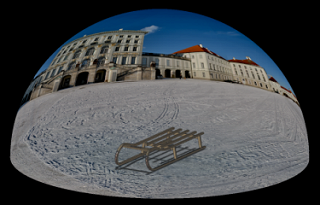
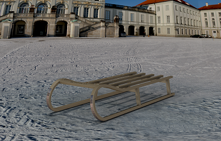
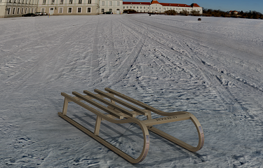
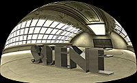
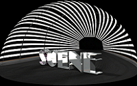
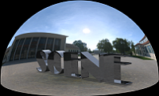
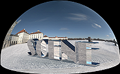

True Studio 3D Dome environment
What is it?
A new 3D Dome scene background is available when setting up scenes in the True Studio environment.
3D Dome uses a panoramic image that is mapped onto a hemisphere dome.

As you pan around the model, different views of the model combined with the dome background reflect the three dimensional character of the environment, creating a more realistic scene.
At any desired scene rotation, High Quality Image static images can be created for the maximum realism of a model in a scene.
|
 |
 |
The 3D Dome option can work in conjunction with the Environmental Image orientation settings on the Global Illumination page to define the dome environment.
There are four available 3D dome visualization scenes available on the System Scenes palette.
|
 |
Factory scene |
|
 |
Greenroom scene |
|
 |
Plaza scene – modern |
|
 |
Plaza scene – European, winter |
Why should I use it?
Use a 3D Dome background along with Global Illumination and a Stage shadow catcher floor plane for the most realistic real-time and static image renderings.
During real-time view rotation, your model will appear to be in a real-world environment.
Where do I find it?
|
Application |
Gateway |
|
Prerequisite |
Advanced Studio Display |
|
Toolbar |
Visualize Shape→Scene Editor |
|
Menu |
View→Visualization→Scene Editor |
|
Location in dialog box |
Background tab→Background list, 3D Dome Panoramic LDR Image group, 3D Dome Settings group Global Illumination tab→Environmental Image Orientation group |
|
Resource bar |
System Scenes |